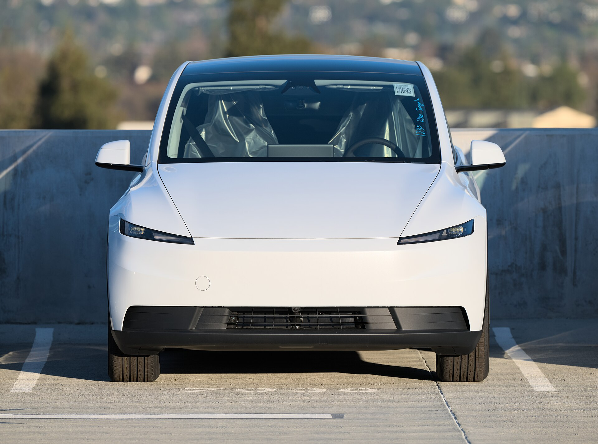
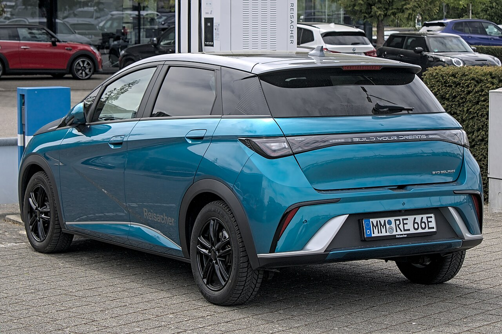
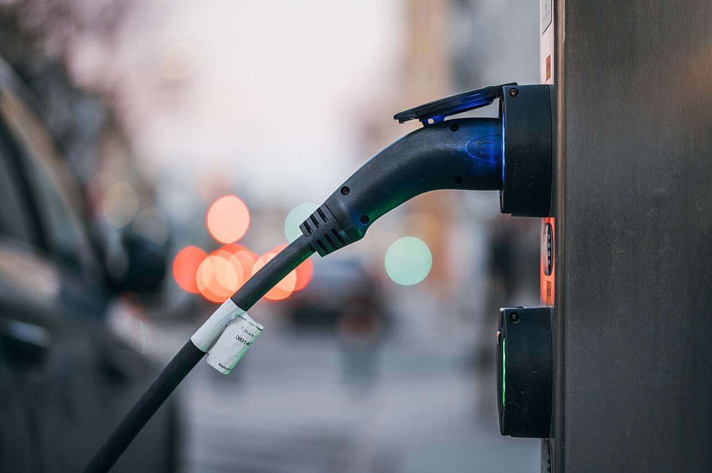

▲ 새로운 평가제를 통과해 하반기에도 보조금을 받게 된 테슬라 모델 Y ⓒ Dllu, Wikimedia Commons (CC BY-SA 4.0)
전기차를 살 때 받는 국고보조금 체계가 근본적으로 바뀌었습니다. 그동안은 차량의 배터리 성능이나 주행거리 등 '차량 스펙'만 평가해 보조금을 차등 지급했다면, 이제는 그 차를 만들거나 들여오는 '기업' 자체를 먼저 평가해 일정 점수를 넘긴 곳의 차량에만 보조금을 지급하는 방식으로 전환됐습니다.
기후에너지환경부는 '전기차 보급사업 수행자 선정 평가기준'을 확정하고 7월 1일부터 시행에 들어갔습니다. 이 평가를 통과하지 못한 제작·수입사의 전기차는 아무리 성능이 뛰어나도 하반기 보조금 지원 대상에서 제외됩니다.
1. 무엇이 달라졌나 — 5개 분야 13개 항목, 100점 만점 60점 합격
새 평가 기준은 5개 분야 13개 세부 항목으로 구성됩니다. 배점은 공급망 기여도 40점, 사후관리·지속성 20점, 환경정책 대응 15점, 안전관리 15점, 기술개발 역량 10점으로 나뉘며, 총점 100점 중 60점 이상을 받아야 통과입니다.
사후관리·지속성 항목에서는 전국 정비망 구축 현황과 부품 공급 체계, 리콜 대응 능력을 살피고, 안전관리 항목에서는 화재·결함 대응 체계와 사이버보안 역량까지 들여다봅니다. 애초 정부는 120점 만점에 80점 이상을 요구하는 초안을 내놨지만, 업계 의견 수렴 과정을 거쳐 100점 만점에 60점 이상으로 문턱을 낮췄습니다.
2. 공급망 기여도 40점의 벽 — 테슬라는 통과, BYD·지커는 탈락

▲ 국내 공급망 기여도 평가에서 낮은 점수를 받아 하반기 보조금 대상에서 제외된 BYD 돌핀 ⓒ Alexander-93, Wikimedia Commons (CC BY-SA 4.0)
13개 항목 중 가장 배점이 큰 '공급망 기여도(40점)'는 생산지, 수입 방식, 국내 부품 조달과 고용 기여도를 종합 평가합니다. 테슬라는 미국에서 생산한 차량을 한미 FTA를 통해 수입하는 구조와 국내 슈퍼차저 충전망 투자, 서비스센터 확충, 장기간 판매 이력이 맞물리며 무난히 통과했습니다.
반면 BYD와 지커(Geely) 등 중국계 업체 8곳은 탈락했습니다. BYD는 완성차 형태로 중국에서 그대로 들여오는 방식이라 국내 공급망 기여도 점수를 확보하지 못했고, 지커는 국내 승용차 판매 이력 자체가 없어 서비스·투자 실적에서 낮은 평가를 받은 것으로 전해집니다.
3. 소비자 영향 — 모델별 보조금 손실액
탈락 기업의 차량을 구매하면 7월 1일 이후부터는 정부 보조금을 전혀 받을 수 없습니다. 손실액은 모델별로 차이가 있는데, BYD 돌핀은 최대 131만 원, 아토3는 151만 원, 씰은 최대 196만 원, 씨라이언 7은 최대 203만 원의 보조금이 사라집니다. 지커 7X는 5,299만~6,999만 원대 가격 구간에서 보조금 지원 자체가 끊깁니다.
보조금이 빠지면 실구매가가 그만큼 오르는 셈이라, 이미 국내 출시를 준비하던 중국계 브랜드 입장에서는 가격 경쟁력에 직접적인 타격을 입게 됐습니다. 반대로 통과 기업인 현대·기아·테슬라·BMW 등의 전기차는 하반기에도 기존과 동일하게 보조금 혜택을 유지합니다.
4. 논란과 전망 — '오락가락 행정' 비판 속 남은 절차
이번 개편을 둘러싸고는 논란도 이어지고 있습니다. 애초 120점 만점에 80점 이상을 요구하던 초안이 100점 만점에 60점 이상으로 대폭 완화되고, 해외 본사의 연구개발(R&D) 실적까지 인정해주는 방향으로 조정되면서 '오락가락 행정'이라는 비판이 제기됐습니다. 국내 공급망을 앞세운 평가 설계 자체가 사실상 특정 국가 브랜드를 겨냥한 보호무역 조치라는 지적도 나옵니다.
기후에너지환경부는 하반기 평가 결과를 반영해 보급사업을 우선 시행하되, 업체별 이의 신청과 자료 보완 절차를 거쳐 세부 기준을 추가로 조정할 여지를 남겨뒀습니다. 전기차 구매를 앞둔 소비자라면 관심 있는 브랜드가 이번 27개 통과 업체 명단에 포함되는지 반드시 확인한 뒤 계약을 진행하는 것이 좋습니다.

▲ 평가제 시행으로 브랜드별 보조금 수령 여부가 갈리면서 구매 전 확인이 필수가 됐다 ⓒ Ivan Radic, Wikimedia Commons (CC BY 2.0)